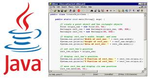

Por ser multiplataforma, a linguagem ganhou espaço em diferentes dispositivos, tornando-se quase que onipresente. Esse avanço também aumentou sua importância no cotidiano das pessoas. Prova disso, é que existem muitas empresas de software que disponibilizam programas que são feitos nessa linguagem, tornando a instalação da máquina virtual Java quase que obrigatória na maioria dos sistema operacionais atuais.
A máquina virtual Java também pode executar programas dentro do navegador, através de um plugin. Essa característica aliás, tem sido um dos fatores que mais contribuíram para a adoçam do Java atualmente.